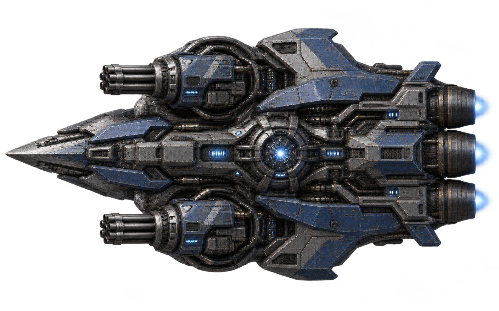
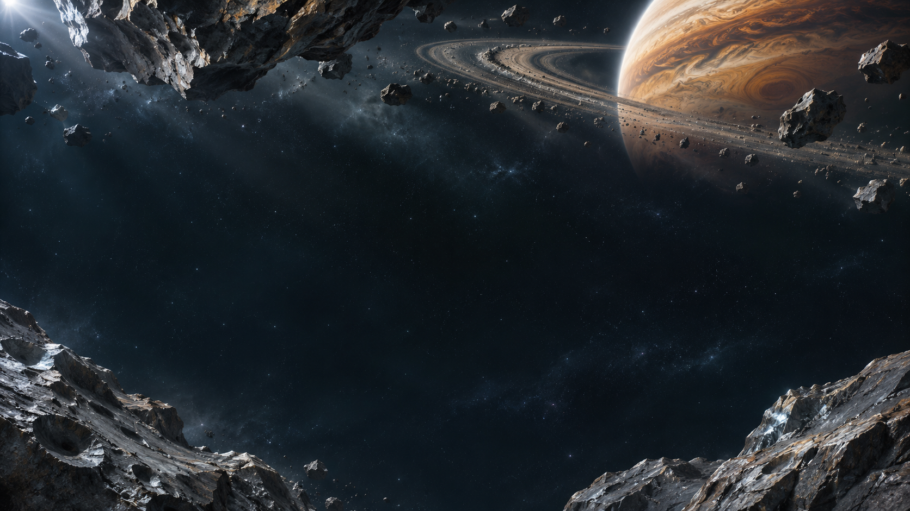
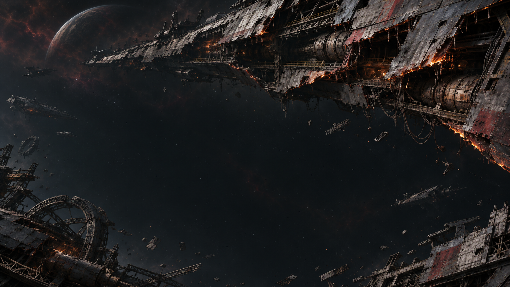
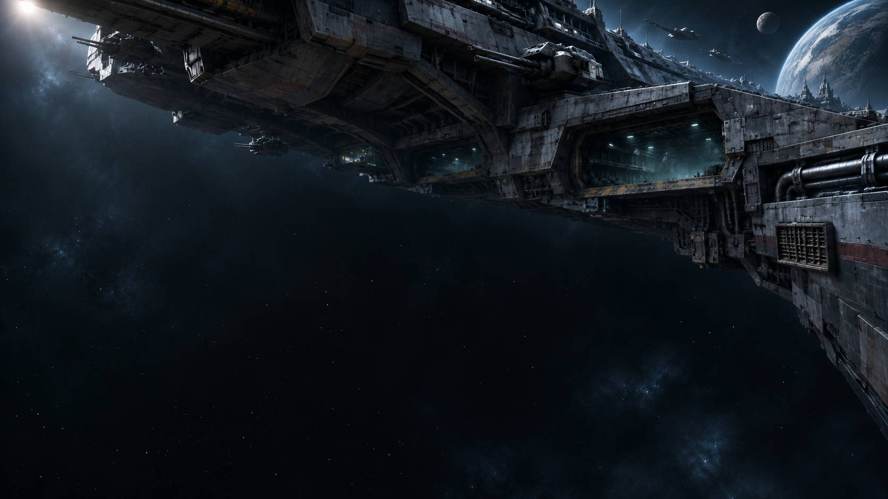
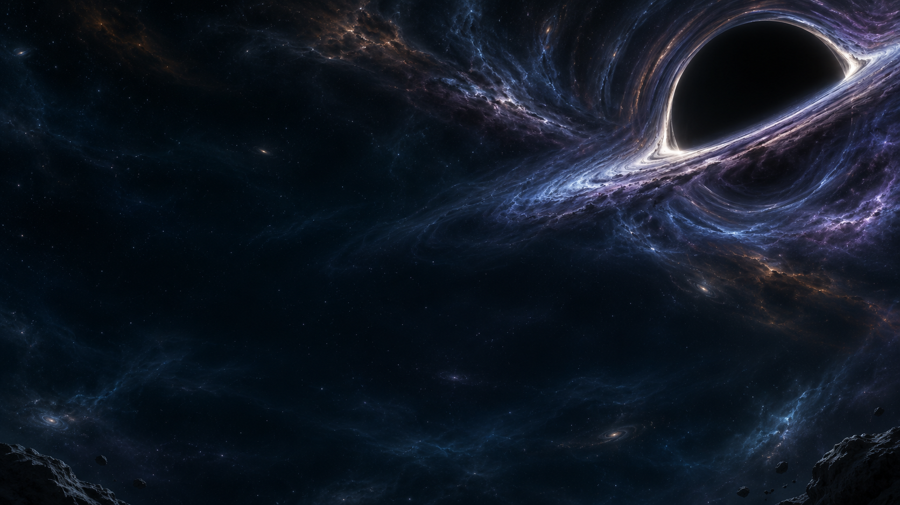

先拆炮，再击破首领
瞄准上、下炮组可以停掉对应攻击。直击中轴，或逐个拆掉武器，选择你的突破口。后期还有双首领协同挑战。
v13 · 深空远征
驾驶赤焰战机，射中补给强化主炮。
抓准时机格挡反击，击破首领后选择进化。
电脑浏览器 · 键盘操作 · 单人无尽生存 · 中英文可切换

FLIGHT BRIEF / 作战简报
战机自动射击，你可以专注于瞄准和走位。首次打开游戏会显示玩法说明，带你了解武器强化、首领进化和完美护盾。

瞄准上、下炮组可以停掉对应攻击。直击中轴，或逐个拆掉武器，选择你的突破口。后期还有双首领协同挑战。
射中能量球提升攻速、弹道或伤害。弹道满四条后再次提升，可以合为更强的一束。连续击毁敌军还能触发暴走。
展开破阵翼炮、召来星隼僚机，或用赤金壁垒吸收敌弹并反击。三条路线可以混合搭配。
点击战场取得键盘控制，切走窗口会暂停。等实体敌弹贴近再按 V，打出完美格挡。已经存好一发贯星炮时，在格挡后 3 秒内按空格可以加快这次蓄力。
THE LONG FLIGHT / 五片星域
开局就能看见行星弧面，之后陨石、舰队残骸、巨舰与黑洞依次向左掠过。每段航程 75 秒，最后 10 秒平滑换景。




向右滚动，查看航程
FIRST FLIGHT / 首批试玩招募中
这款游戏从零开始，用 vibe coding 一步步做到了 v13。现在想听听第一次玩的人，最真实的感受。
不用写长评。玩一局，留下三个瞬间就好。
先飞一局完成后把反馈发给邀请你试玩的人。此页可帮你整理文字。